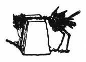

Why be bashful about it when really I am quite proud of what I've produced so far with my Curiouser House books. It's a big part of my bookish life that I haven't pushed as hard as I would like. It's my hobby; a passion, and, with the risk of being vulgar, it is my side hustle
. Which is to say, the venture is set up to able to make money, but that is of secondary importance. Primary importance is the process, and for ME to able to have copies of my favorite classics in matching editions that I, my very own self, have designed and put together.
So what's the deal? The idea is to take obscure and classic literature that are in the public domain, and inject some new life into the overall design, and to include any supplemental materials which might complement the book in question. In this way I can build up my own library of matching classics, and maybe encourage other people to check 'em out, too.
The process tickles several of my inclinations: book-centric design, typography, great books, and research. You cannot underestimate the amount of research that can be done. It's not always strictly necessary, maybe, but there's always the possibility that you can elevate an edition by including illustrations or articles about the work.
Quick note: the website is a work in progress. I had a nice website through Wordpress for a long time but finally a faulty update to some random plugin blew it to pieces. This might have been for the best, because I am actually having fun hardcoding these sites. And it's much more visually engaging than the Wordpress version ever was. But it does take more work.
Below are a few of the cover designs. You'll notice in those, as well as the spine designs at the header of this post, a matching style that leaves enough room for each cover to be its own thing.


Moby Dick is a bit special. It's HARDCOVER! and as such a little larger than the perfect-bound trade paperbacks, and as such I call it a Curiouser House Giant
in reference to the Modern Library Giants of yesteryear. Being a hardcover, it also consequently has a dust jacket!! Thus I was able to effectively design TWO covers. The dust jacket, and the design on the cover boards themselves. It's notorious for being a lengthy tome, so I wanted to honor that reputation.
More of interest:
- Monster Brains: a collection of illustrations by Sidney Sime Clearly, surely, an inspiration on the psychedelic movement later in the century. I also see how he could have influenced Mervyn Peake's illustration work.
